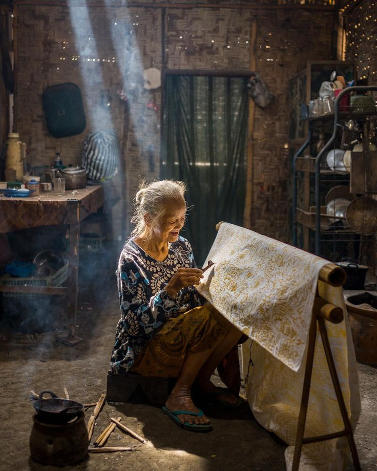
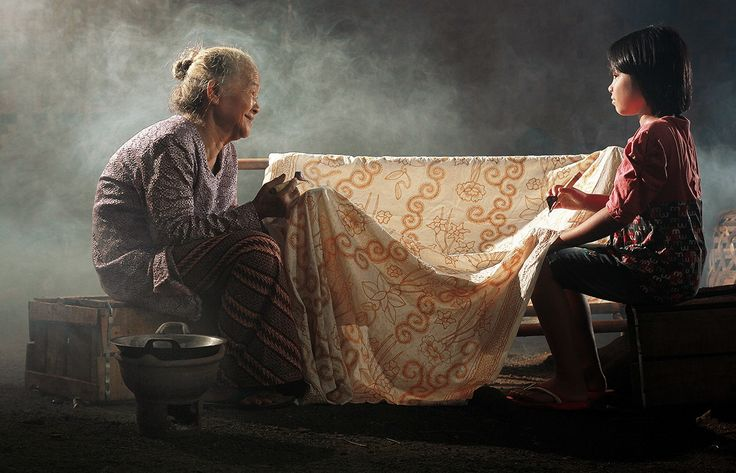
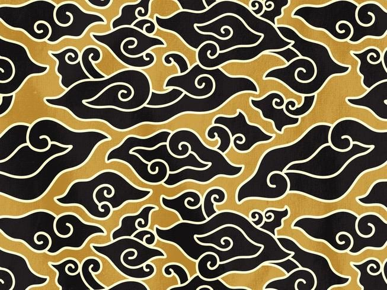
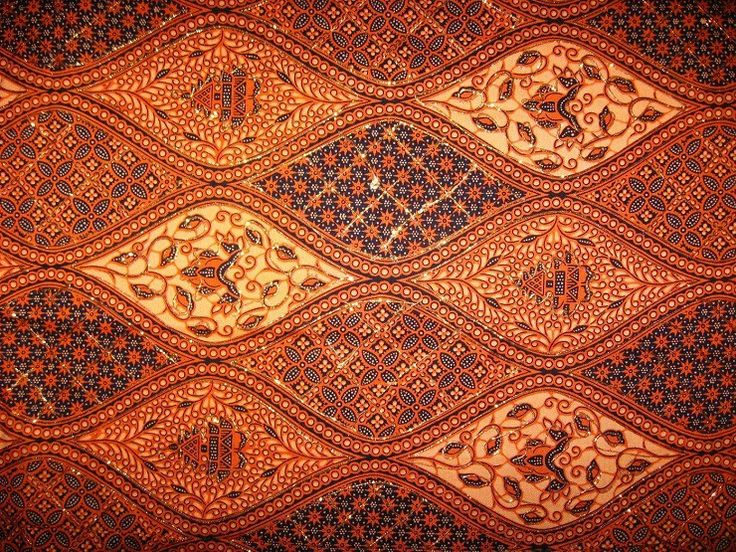
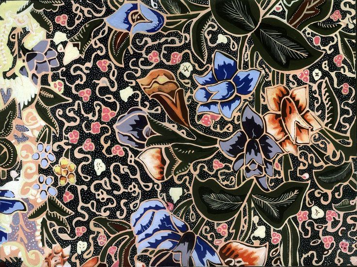

Beranda
Batik merupakan warisan budaya Indonesia yang diakui oleh UNESCO sebagai Warisan Kemanusiaan untuk Budaya Lisan dan Nonbendawi pada 2 Oktober 2009. Batik Indonesia sangat beragam, dengan setiap daerah memiliki motif khas yang memiliki makna dan filosofi tertentu.
Kini, batik tidak hanya digunakan untuk acara formal, tetapi juga dalam berbagai kesempatan sehari-hari. Batik telah menjadi busana yang bisa dipakai oleh segala usia, termasuk anak muda, dan dipakai secara luas oleh masyarakat di hari-hari tertentu untuk merayakan kebudayaan nasional.

Sejarah Batik
Batik di Indonesia memiliki sejarah panjang, dimulai sejak zaman Kerajaan Majapahit dan mulai populer pada abad ke-17 hingga ke-19. Beberapa sejarawan berpendapat bahwa teknik batik berasal dari Cina, meski temuan ini masih diperdebatkan karena perbedaan alat dan bahan. Batik pertama kali disebutkan oleh Sir Thomas Stamford Raffles dalam bukunya History of Java, dan pada tahun 1837, batik Indonesia diperkenalkan di Museum Etnik Rotterdam oleh seorang saudagar Belanda.
Awalnya, batik erat kaitannya dengan perempuan sebagai sumber mata pencaharian, namun dengan ditemukannya batik cap, laki-laki juga mulai terlibat dalam proses pembuatannya. Seiring waktu, batik menjadi busana yang dikenakan oleh tokoh-tokoh penting Indonesia dan diperkenalkan ke dunia internasional, hingga akhirnya UNESCO menetapkan 2 Oktober sebagai Hari Batik Nasional pada tahun 2009, menegaskan status batik sebagai identitas budaya Indonesia.

Motif Batik
Tak sedikit masyarakat Indonesia yang masih bingung menentukan batik untuk dikenakan sehari-hari. Sebab motif batik asli Indonesia sangat beragam dan ada beberapa diantaranya tidak bisa digunakan secara sembarangan. Lantas, motif batik seperti apa yang mudah dipadupadankan dan bisa digunakan untuk berbagai kesempatan? Berikut ini adalah beberapa ragam jenis batik paling populer dan cocok untuk dikenakan di berbagai momen.
Batik Mega Mendung
Batik Mega Mendung adalah salah satu motif batik khas Cirebon yang terkenal dengan pola menyerupai awan dan memiliki makna filosofi tentang kesabaran. Motif ini memiliki tujuh gradasi warna yang melambangkan tujuh lapisan langit, sementara kata "mendung" merepresentasikan sifat tenang dan tidak mudah marah. Gradasi warna tersebut juga menggambarkan suasana langit yang meredup sebelum hujan, memperkuat simbolisme ketenangan dalam kehidupan manusia.

Batik Sogan
Batik Sogan berasal dari Solo dan Yogyakarta, dikenal dengan warna cokelat muda beraksen bunga, titik-titik, serta lengkungan dan garis yang elegan. Motif ini sudah ada sejak zaman nenek moyang dan sering digunakan oleh raja-raja di keraton. Kombinasi warna hitam dan cokelat membuatnya tetap populer, bahkan di kalangan fashionista Asia dan Eropa, meski kini batik hadir dalam berbagai motif dan warna.

Batik Tujuh Rupa
Batik Pekalongan, dikenal sebagai batik pesisir yang kaya warna, berasal dari Pekalongan, Jawa Tengah, yang juga dikenal sebagai Kota Batik. Batik ini memiliki ciri khas motif tumbuhan dan hewan, serta diperkaya dengan garis dan titik yang menggambarkan adaptasi masyarakat pesisir terhadap pengaruh budaya luar. Filosofi batik Pekalongan menonjolkan akulturasi, seperti hiasan keramik Tiongkok, yang mencerminkan kelembutan dan kefasihan dalam setiap lukisannya.

Jenis Batik
Berikut ini adalah beberapa jenis batik yang terkenal di Indonesia.